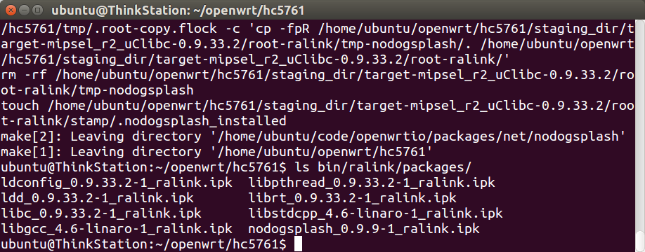
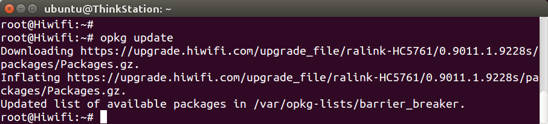
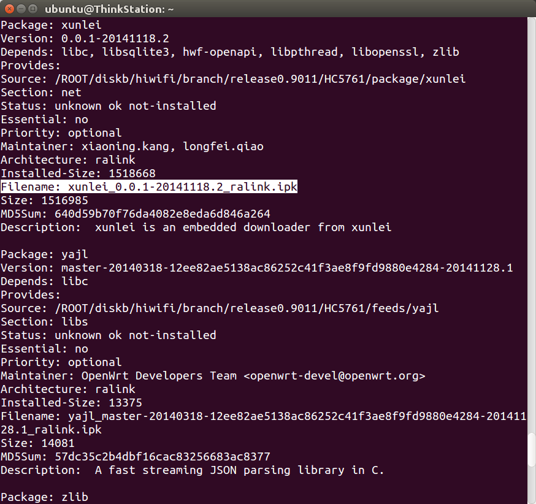
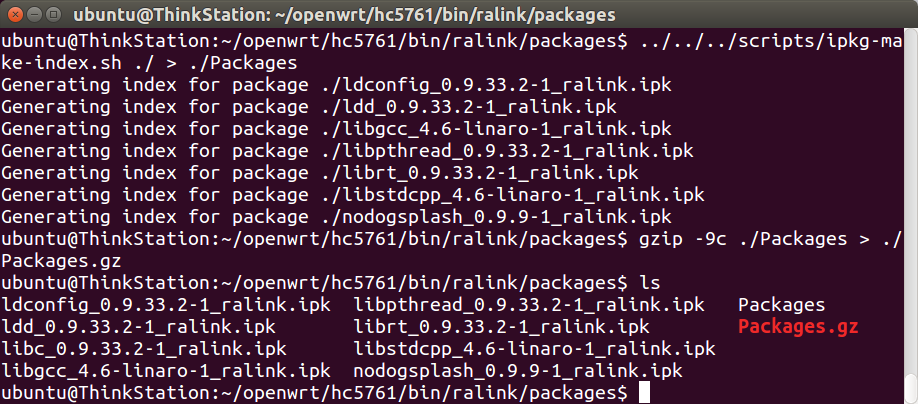
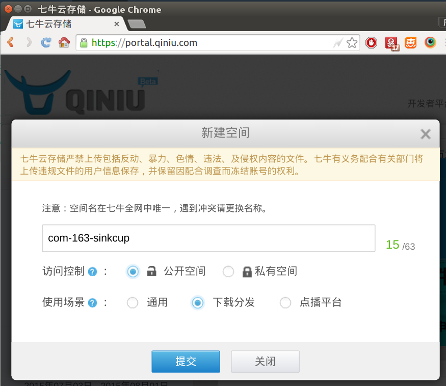
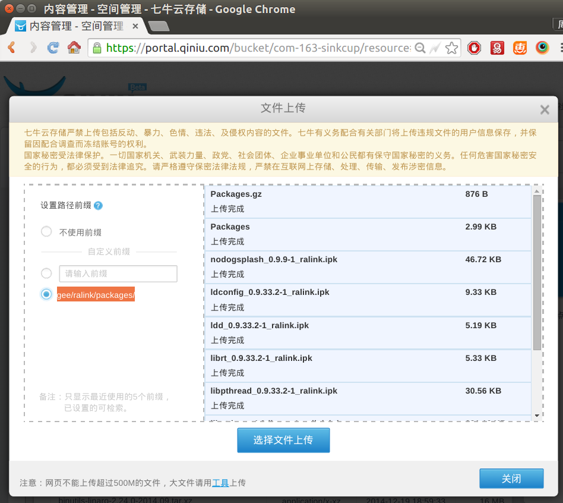
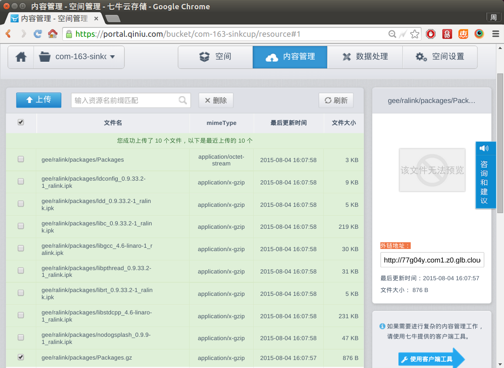
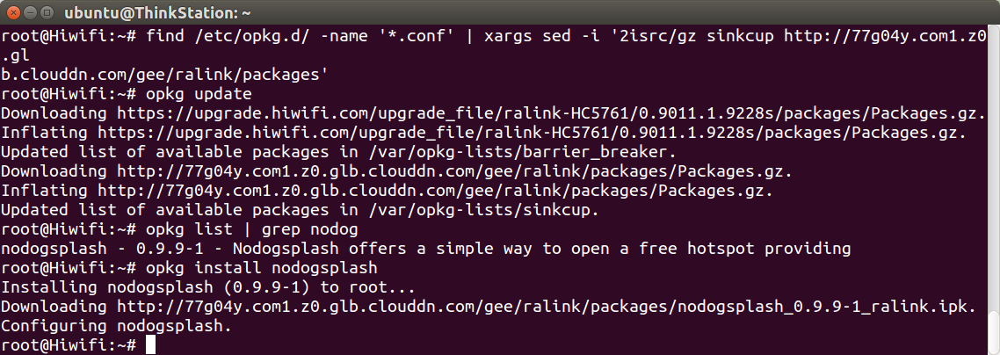

极路由和优酷都提供了官方opkg软件仓库（package repository，又称软件源），但开发者无法提交新软件进去，一旦需要用的软件不在里面，怎么办？有两个办法：添加到开源仓库 或者 搭建自己的仓库。
添加到开源软件仓库
极路由、优酷、小米、魔豆使用的都是OpenWrt 12.09老系统，而OpenWrt.org官方已不再维护12.09和对应的仓库了，所以本站发起了一个开源项目——12.09软件仓库，代码在：https://coding.net/u/openwrtio/p/packages/git。
如果你需要某个软件，而此仓库中没有，欢迎fork项目，然后发起PR（合并请求）。
搭建自己的opkg软件仓库
按照之前的文档（http://openwrt.io/docs/build-a-single-package/），编译了nodogsplash这个package，然后查看bin目录，会看到里面都是ipk文件，如图：

而在路由器中执行opkg update时，下载的是仓库里的Packages.gz文件，手动下载解压，会发现里面是ipk索引，安装时就是按照Filename字段下载了具体的ipk。

wget https://upgrade.hiwifi.com/upgrade_file/ralink-HC5761/0.9011.1.9228s/packages/Packages.gz
gzip -d Packages.gz
cat Package

生成索引文件Packages.gz
按照上面的原理，如果我们生成Packages.gz，把它和编译出来的ipk都上传到网上即可实现自己的仓库。生成Packages.gz的指令如下：
cd ~/openwrt/hc5761/bin/ralink/packages/
../../../scripts/ipkg-make-index.sh ./ > ./Packages
gzip -9c ./Packages > ./Packages.gz

上传到七牛云储存
然后上传到哪里？建议放在云储存CDN上，下载速度快，而不要放在自己服务器上。本文以七牛云储存（每月免费10GB流量，官网qiniu.com）为例，新建一个空间，上传文件（建议输入自定义前缀，也就是目录，比如gee/ralink/packages/），如图：
  
上传完毕，每个文件都有外链地址，比如：
http://77g04y.com1.z0.glb.clouddn.com/gee/ralink/packages/Packages.gz
那对应的opkg设置为：
src/gz sinkcup http://77g04y.com1.z0.glb.clouddn.com/gee/ralink/packages
把自己的源加入极路由opkg配置中，然后就能通过opkg查看和安装nodogsplash了，如图：
find /etc/opkg.d/ -name '*.conf' | xargs sed -i '2isrc/gz sinkcup http://77g04y.com1.z0.glb.clouddn.com/gee/ralink/packages'
opkg update
opkg list | grep nodog
opkg install nodogsplash
